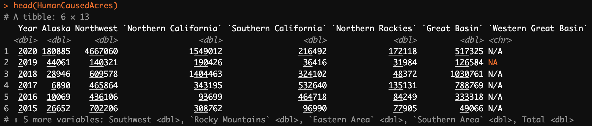
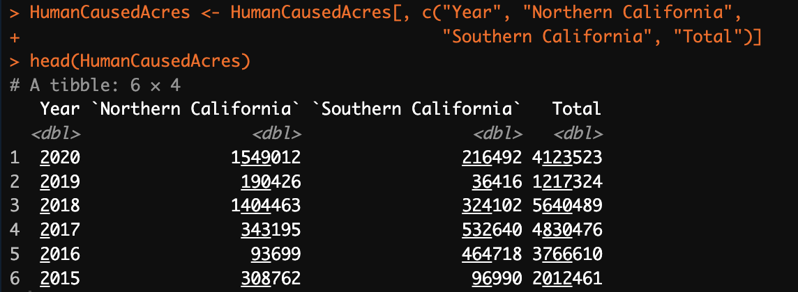
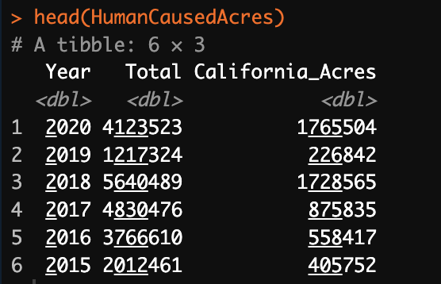
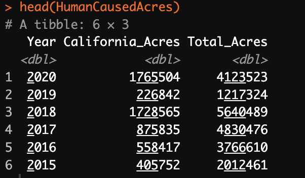
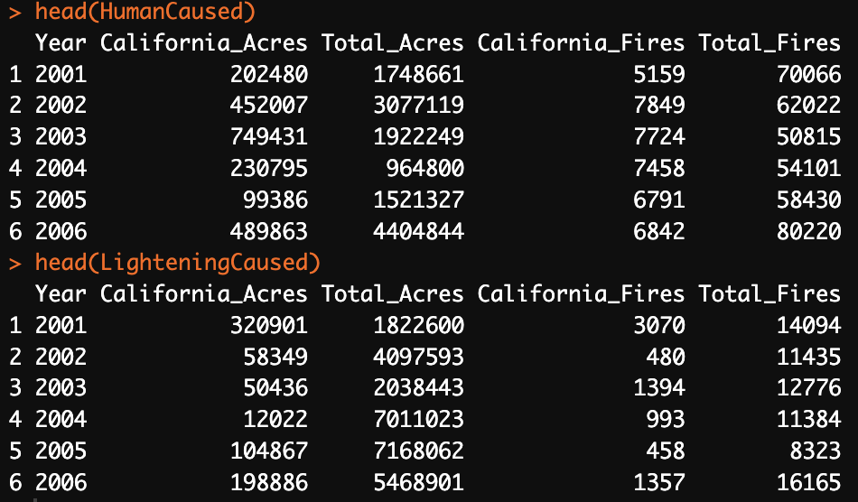
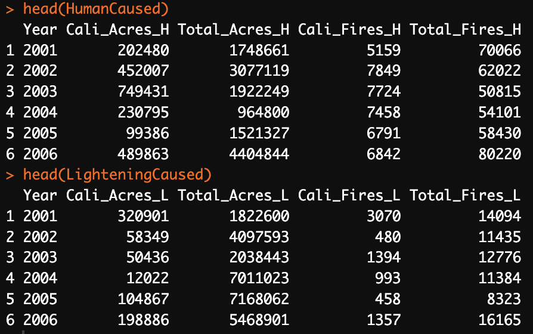
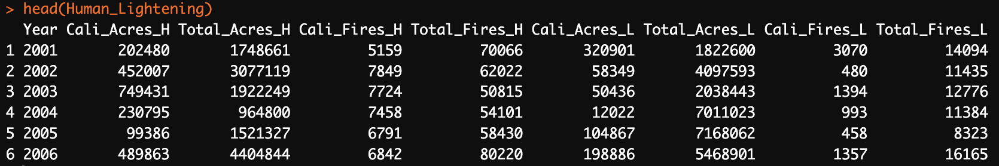
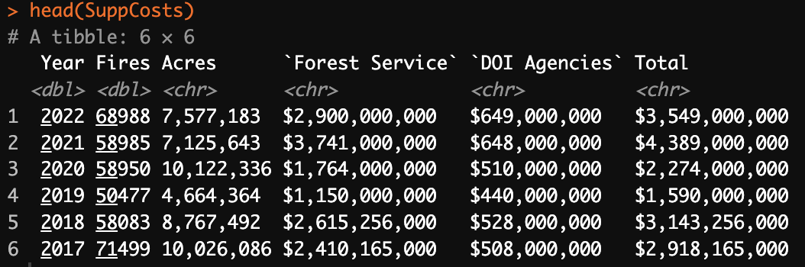
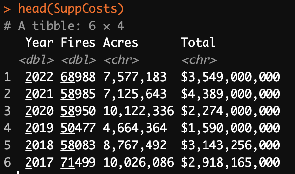

Data Cleaning
In this section, I will walk through the data cleaning process for my wildfire prediction and mitidation project. The primary goal is to prepare the raw data for analysis and modeling. I use R code to clean record, labeled data that has both qualitative and quantitative variables, and python code to clean text data. To access the original data cleaning codes, please visit the Github link here 1
Wildfire Statistics
Data Loading
I start by loading the raw data from CSV files, including HumanCausedAcres.csv, HumanCausedFires.csv, LighteningAcres.csv, and LightningFires.csv. These files contain various data related to wildfires statistics across the states.
Note that the four raw datasets share an extremely similiar data structure, except that HumanCausedAcres.csv and LighteningAcres.csv are the statistics on wildfire acres caused by human and lightening, whereas HumanCausedFires.csv and LightningFires.csv are the statistics on the number of wildfires caused by human and lightening.(Details on the raw datasets are demonstrated under the Data Cleaning tab). Therefore, I will use HumanCausedAcres.csv as an example to illustrate on the data cleaning process, and the rest of the three datasets follow the exact same cleaning goal and process.
Subset Columns

Column Selection: Initially, I have all columns from the raw data. However, for my analysis, I need a subset of columns that are relevant. These typically include Year, Northern California, Southern California, and Total. The columns are chosen to focus on the analysis on the trend of wildfire across the states.

Create New Column and Remove Unnecessary Columns
Consolidating Acreage: To simplify the representation of acreage data, I create a new column called California_Acres in the HumanCausedAcres data frame. This new column represents the combined acreage for both Northern and Southern California.
Streamlining Data: After creating the California_Acres column, I remove the Northern California and Southern California columns from the data frame since they are no longer needed for my analysis.

Rename Columns
Clarity and Consistency: To ensure clarity and consistency in column naming, I rename the ‘Total’ column to ‘Total_Acres’. This change accurately reflects the content of the column, which avoids the mergeing process.

Repeating the above cleaning procedures on the rest of three datasets and get four cleaned up wildfire datasets for this study.
Merge Data Frames
Data Integration: I merge two data frames, ‘HumanCausedAcres’ and ‘HumanCausedFires’, using the Year column as the common identifier. Similarly, two other data frames, ‘LighteningAcres’ and ‘LightingFires,’ are also merged based on the Year column. The two merged datasets are called ‘HumanCaused’ and ‘LighteningCaused’ respectively.

I observed that the two datasets have the same column names. Because my goal is to conbine the datasets into onw big chart, I need to rename the columns to avoid confusion.

Then, I can merge the two datasets into one basing on the column Year, and name it ‘Human_Lightening’

Save Cleaned Data
The cleaned data is saved into my project repository and can now be used for predictive modeling and other analyses.
Suppression Cost Statistics
In this section, I will discuss on the data cleaning process for the ‘SuppCosts’ dataset, which contains information about wildfire suppression costs. I will clean, transform, and organize the data to prepare it for analysis.
Data Loading
I begin by loading the raw “SuppCosts” dataset from the CSV file. This dataset contains columns such as Year, Fires, Acres, Forest Service, DOI Agencies and Total, which provide information about suppression costs over the years.

Subset Columns
Column Selection: Initially, I have all the columns from the raw data. However, for my analysis, I need a subset of columns that are relevant. I select the columns Year, Fires, Acres, and Total to focus on wildfire suppression cost trends.

Remove Rows and Convert Columns
Data Cleanup: - I remove rows below index 38 from the dataset. - I convert the “Acres” and “Total” columns to numeric format by removing commas and dollar signs.
Rename Columns
Clarity and Consistency: To ensure clear and consistent column naming, we rename the ‘Total’ column to ‘Total_spent.’ This change accurately reflects the content of the column.
Calculate Combined Score
Data Enrichment: We calculate a new column called “CombinedScore” by summing the “Fires” and “Acres” columns. This combined score represents the overall impact of wildfires, taking both the number of fires and acres affected into account.
Sort Data
Data Analysis: To facilitate analysis, we sort the data based on the “CombinedScore” column in descending order. This arrangement allows us to identify the most significant wildfire events.
Save Cleaned Data
The cleaned and enriched “SuppCosts” dataset, now organized and ready for analysis, is saved to a CSV file named “sorted_SuppCosts.csv” in the “data/cleaned-data” directory.
With the data cleaning process complete, you can now use the cleaned dataset for further analysis and modeling.
Next Steps
The above data cleaning process is specific to the “SuppCosts” dataset. To perform similar cleaning procedures on the other three datasets, you can follow the same steps, ensuring that the data is prepared consistently for your wildfire statistics study.